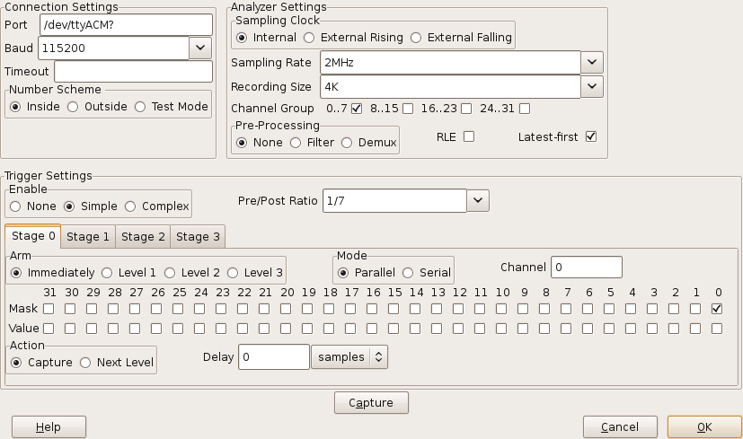

logic_sniffer.py
SUMP Settings
Specific settings for the SUMP device are controlled from the Device Settings dialog:

The various fields are:
Connection Settings
- The timeout limit (in seconds) applied on a read or write with the SUMP device.
A blank entry means no timeout is applied.
Analyzer Settings
- Selects the source of the clock:
- uses the clock generated internally by the SUMP device.
- uses a clock signal connected to the CKI pin, clocking on the rising edge.
- uses a clock signal connected to the CKI pin, clocking on the falling edge.
- selects a rate for the internal clock to generate.
- selects the number of samples to record.
- causes the checked channel groups to be recorded.
- enables one of the mutually exclusive signal processing options:
- one sample is read in every clock cycle
- very short input pulses are ignored, reading one sample per clock cycle
- two samples are read in every clock cycle
- enables Run-Length-Encoded data transmission when checked.
- check when the SUMP device sends its most recent samples first (e.g. Open Bench Logic Sniffer.)
When not checked the samples received first are assumed to be the earliest.
Trigger Settings
- recording begins as soon as "capture" is clicked.
- Starts recording based on a single trigger signal configured in "Stage 0".
- Starts recording based on a combination of triggers in Stages 0..3 .
- ratio of samples that will be recorded before and after the trigger firing.
- These trigger stages can be combined in various ways
- the stage is armed and begins testing inputs as soon as the sampling run starts.
- the stage will be armed after the specified trigger Level is set by another stage.
- the associated Trigger Mask and Trigger Values are tested in parallel against the respective input channels.
- the associated Trigger Mask and Trigger Values are tested against successive values from one of the input channels.
- specifies the input channel to use for Serial trigger mode. A channel number from 0 to 31 may be specified.
- check the channels (in parallel mode) or successive samples (in serial mode) to be tested by this trigger.
- checked channels (in parallel mode) or successive samples (in serial mode) must be read as 1 for the trigger to fire. Un-checked values must read as 0.
specifies the action to take when this trigger fires:
- begin recording.
- advance the trigger level by one to arm another stage.
- delays a given number of clock cycles between the trigger firing and the specified Action.
From 0 to 65,535 samples may be specified.
For convenience this delay can be entered as a sample count, or a time in seconds.
Control Buttons
- arms trigger stages and begins a recording run.
- accepts the SUMP configuration to be used in a later recording run.
- throws away the values entered with no further action.